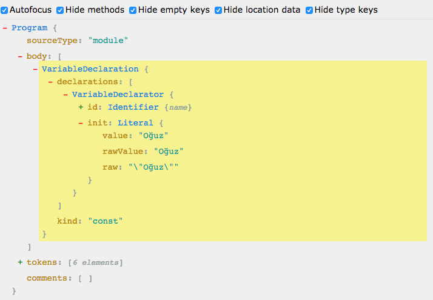

10 günde yazılmış ve zaman içinde evrimleşerek epey yol katetmiş bu dil bugün milyonlarca web sitesine hayat veriyor. Web, Desktop ve IoT gibi farklı platformlarda hayatına devam ediyor. Eğer bir geliştirici olarak bu yolculuğun nasıl başlayıp nasıl tamamlandığını merak ediyorsanız gelin beraber keyifli bir keşfe çıkalım.
JavaScript Brendan Eich tarafından 1995 yılında Netscape’de geliştirildi. İlk önce Mocha adı verildi. Daha sonra LiveScript ve en son JavaScript adını aldı. Netscape Navigator 2 ile hayatımıza girmiş oldu. 1996 yılından itibaren tarayıcılarda görülmeye başladı.
JavaScript EcmaScript dil standardının bir uygulamasıdır. Ecma organizasyonu tarafından 1997 yılında resmi olarak standartlaştırılması kabul edildi. Standardizasyon adı Ecma-262 olarak bilinmekte. Ecma’nın teknik komitesi olan TC39 (Technical Committee 39) çalışma grubu tarafından gelişimi sürdürülmekte. Ecma içerisinde farklı çalışma grupları da bulunuyor. Her çalışma grubu farklı bir işle uğraşıyor.
JavaScript tasarım açısından scripting dili olarak tasarlanmıştır. Host environment olarak en çok browser dediğimiz yapı içerisinde çalışıyor. Ancak, JavaScript yorumlanan bir dil ve yorumlayıcının olduğu her ortamda çalışabilir. Bkz: Nodejs, Electron. Bizim bu yazıda çıktığımız yolculuk bu yorumlayıcıları anlamak üzerine olacak.
Biz geliştiriciler olarak JavaScript’i en çok browser üzerinde çalıştırıyoruz. Elbette bu dilin çalışabilmesi için bazı yorumlayıcılara ihtiyaç duyuluyor. Günümüzde browser denince akla gelen Chrome, Firefox, Safari, Internet Explorer, Opera gibi uygulamalar JavaScript’i yorumlamak için adına Motor (Engine) denilen araçlar kullanıyorlar.
JavaScript motorları yaptığımız işin kalbinde yer alıyor.
Öncelikle araba motorlarını hatırlayalım. Araba motorları belli bir işlevi yerine getirmek için tasarlanmış aracın en önemli parçasıdır. Aracın hareket edebilmesi için yakıtın hareket enerjisine dönüştürülmesi gerekmektedir. İşte bu hareket enerjisini üretmek için motor içinde yakıtın yakılması gerekli. Bu sayede motor arabaya hareket kazandıracak enerjiyi üretebilir.
Kısa bir motor bilgisinden sonra konumuza dönersek aslında tarayıcılar içerisindeki JavaScript yorumlayıcılarına neden motor denildiğini daha iyi anlayabilmiş olmanızı ümit ediyorum. Hatta Chrome’un JavaScript yorumlayıcısı olan V8 Moturunun adı V şeklinde dizayn edilmiş ve 8 silindirden oluşan bir motor türünden esinlenilmiştir. Bu motor türü iyi performansı ve çok yakıt yakmasıyla bilinir. Sanırım Chrome için en doğru motor adını seçmişler.
Chrome — V8
Firefox — SpiderMonkey (geliştirilen ilk JavaScript motoru)
IE — Chakra
Safari — JavaScriptCore
JavaScript motorlarını aslında bir tür sanal makine olarak adlandırabiliriz. JavaScript kodunu yorumlamak ve çalıştırmak için özel olarak tasarlanmış bir tür “process virtual machine”’dir (kısaca PVM diyelim biz). Process virtual machine aslında tek bir yazılımı çalıştırmak için dizayn edilmiş sanal makineyi ifade eder. Örneğin: Linux sistemler üzerinde Windows programlarını çalıştırmak için kullanılan Wine gibi. JavaScript motorlarının tek amacı kodu okuyup derlemek olduğu için bu tanıma girmesi oldukça uygun sanırım. Bir de bunun “system virtual machine” (kısaca SVM diyelim biz) olanı var. Örnek olarak: MacOSX üzerinde VirtualBox ile windows işletim sisteminin çalıştırılması gibi.
Her JavaScript motoru EcmaScript sürümlerini kendisine implemente eder. EcmaScript geliştikçe bu motorlar da kendilerini buna göre güncelleyerek dilin yeni özelliklerinin kullanılabilmesinin önünü açarlar. Tarayıcılar bu implementasyonu yapsa bile eski sürümleri bu özellikleri desteklemeyebilir. Bu gibi durumlarda yazdığımız kodu transpiler dediğimiz araçlardan geçiririz. Yaygın olarak kullanılan tüm tarayıcıların JavaScript motorları ile uyumlu olan EcmaScript versiyonunu elde edip tarayıcıya bu kodu çalıştırmasını söyleriz. Böylelikle geriye dönük uyumluluk problemleri ile daha az uğraşırız. Bu transpiler araçlarının en bilineni ve yaygın olarak kullanılanı ise Babel.
JavaScript motorunu ifade ederken kullandığımız oku ve derle prensibi bu motorların basit olduklarını yansıtmaz. Örneğin JavaScript motorları analiz, yorumlama, optimizasyon ve garbage collection gibi yapılara sahipler. Dolayısı ile bir JavaScript kodunun çalışabilir bir koda dönüştürülmesi sırasında bir dizi işlemden geçtiğini söyleyebiliriz. Yani aslında haberiniz olmadan arkada detaylı bir çalışma yapılıyor.
Biz geliştiriciler olarak çoğu zaman bu arkada dönen filmin farkında olmayız veya önemsemeyiz. Ancak iyi bir geliştirici olmak, yazdığınız kodun çalıştığı ortamda nasıl bir süzgeçten geçtiğini ve nasıl bir tepkimeye neden olduğu hakkında fikir sahibi olmayı gerektirir. Bu sayede daha performanslı kodları nasıl yazacağınıza dair bilgi sahibi olabilirsiniz. Bu yüzden aslında çok önemlidir.
Tanım olarak basit tabir ile anlatırsak normal konuşma dillerinde nasıl anlaşılabilir olmak için cümlelerimizi oluşturan sözcükleri bir gramer yapısına ve kurallar bütününe göre diziyorsak bilgisayar dillerinde de durum aynı. Sadece tek farkla aynılar. Bilgisayar dilleri konuşma diline göre çok daha karmaşık yapılara sahipler.
Kısacası parser yazdığımız kodları kurallara uygun olarak (syntax) ufak parçalara bölüp işlenmesi için sıraya alır, kodu tanır ve üzerine düşen işlemi tamamladıktan sonra işlemi AST devralır.
Öncelikle kod sözcüksel analiz (lexical analysis) ve sembolleri gruplama (tokenizing) işlemine alınır.
Daha iyi anlamak için basit bir örnek yapalım;
JavaScript kodundan elde ettiğimiz AST çıktısı şu şekilde;
AST kodunu alan derleyici (burada Codegen) yine bazı iyileştirmeler yaparak direkt olarak makine koduna dönüştürür.
Burada bir parantez açıp Tree Shaking konusuna değinmek istiyorum. Tree Shaking yazdığımız kodların içerisindeki kullanılmayan kodların çıkarılması/elimine edilmesi için kullanılan bir terim. Özellikle import/export modülleri sayesinde webpack gibi bundler araçları yukarıdaki AST çıktısına bakarak kullanmadığınız kodları atabiliyor. Bu bize önemli bir performans avantajı sağlıyor.
Bu pipeline’da JavaScript kodu parse ediliyor ve ardından AST oluşturuluyor. Ignition (TurboFan altyapısı ile oluşturulmuş yeni bir interpreter) oluşan AST üzerinden Bytecode’u ürettikten sonra TurboFan (JIT derleyici) üzerinde optimize edilerek makine koduna dönüştürülüyor.
Şimdi burada süre gelen zaman içerisinde neden direkt makine koduna compile edilirken bytecode üretmeye başladılar diye düşünüyor olabilirsiniz. V8 ekibi bunun en büyük nedenlerinden birinin fazla kaynak tüketimini azaltmak olduğunu belirtiyorlar.
Oluşan bytecode sonrası TurboFan yavaş çalışan bir şeyler var mı ve bunları optimize etmek gerekiyor mu veya bir tıkanıklık var mı diye kontrol ediyor. Örneğin fazla kaynak tüketen bir fonksiyon TurboFan yardımı ile optimize edilerek makine koduna çevriliyor. Bu sürecin takibi ve analiz edilip yeniden optimize edilmesi elbette ekstra bir kaynak tüketimine neden oluyor. Özellikle mobil cihazlarda çalışan Chrome’un daha fazla pil tüketimine neden olan sebeplerden bir tanesi bu analiz sürecinde harcanan ekstra kaynak.
Bu tarz mekanizmalar JavaScript motorlarının aslında performans odaklı gelişiminin bir sonucu. Yazdığınız kodun daha hızlı çalıştırılabilmesi için haberiniz olmadan işleyen bir süreçler bütünü hepsi.
JavaScript performansının artırılması ve sorunsuz çalışması için bellek yönetiminin yapılması oldukça önemli bir konu. V8 motoru bu işlemi dinamik olarak yapmaktadır. Periyodik olarak JavaScript uygulaması için ayırılan belleğin üzerinden geçerek ihtiyaç duyulmayan veriye ait bellek temizlenir. JavaScript’in belleğe erişmek için bir arayüzü bulunmuyor ve browser tarafından bir API sağlanmıyor. Dolayısı ile bellek yönetimi tümüyle V8 motoru tarafından kontrol ediliyor. V8 bunu dinamik olarak denetleyip bellek performansını en iyi şekilde optimize etmek için çalışıyor.

Copyright
All Right Reserved